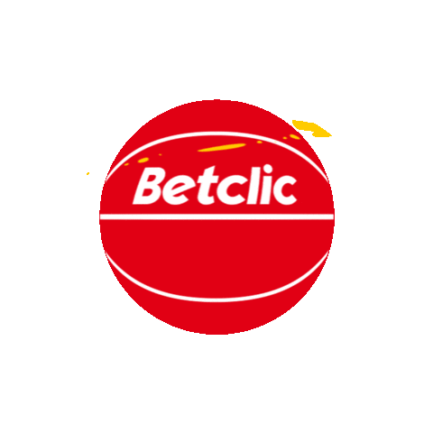
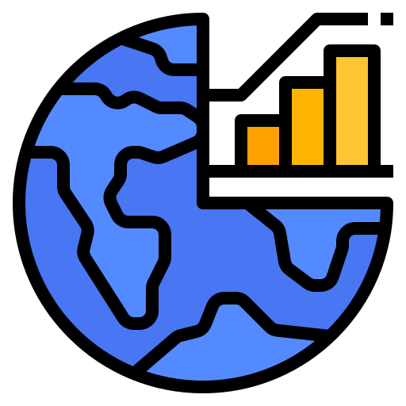
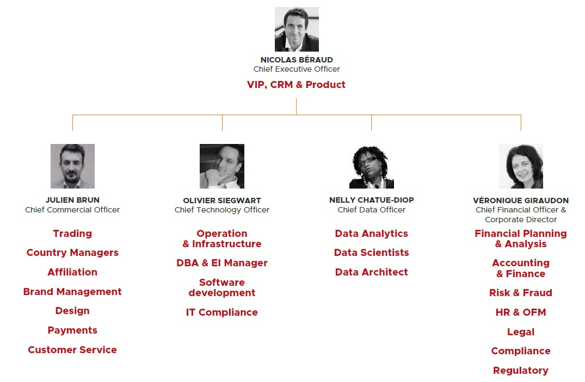
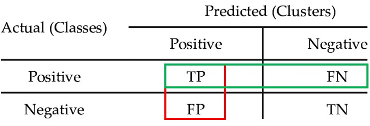

<!DOCTYPE html>
<html lang="en">
  <head>
    <meta charset="utf-8" />
    <meta name="viewport" content="width=device-width, initial-scale=1.0, maximum-scale=1.0, user-scalable=no" />

    <title>reveal-md</title>
    <link rel="stylesheet" href="./css/reveal.css" />
    <link rel="stylesheet" href="./css/theme/blood.css" id="theme" />
    <link rel="stylesheet" href="./css/highlight/zenburn.css" />
    <link rel="stylesheet" href="./css/print/paper.css" type="text/css" media="print" />

  </head>
  <body>
    <div class="reveal">
      <div class="slides"><section  data-markdown><script type="text/template">

#### Présentatation de mon stage en entreprise

[](image.png) 


Jules Bouvet - IMT Atlantique  
</script></section><section  data-markdown><script type="text/template">
### Sommaire  


1. L'environnement économique de Betclic  

2. Le fonctionnement de l'entreprise  

3. Le travail des ingénieurs chez Betclic
</script></section><section ><section data-markdown><script type="text/template">
### 1. L'environnement économique

[](image.png)

</script></section><section data-markdown><script type="text/template">
### Quelques chiffres:  


<small> **2005** : Création de Betclic par Nicolas Béraud </small>

<small> **6 pays** : France, Italie, Portugal, Pologne, Suède et Malte </small>

<small> **4 domaines** : Paris sportifs, Casino, Poker et Turf </small>

<small> **280** employées à Bordeaux, **200** à Malte et **20** entre le Portugal, l'Italie et la Suède </small>

<small>**x%** de femmes et un âge moyen de **33 ans** </small>

<small> **85 sports** différents, **60 traders** </small>
</script></section><section data-markdown><script type="text/template">
### L'environnement : 

<small>Un marché de ...</small>

<small>Une croissance de ...</small>

<small>Une part de marché de ...</small>

<small>Travail avec des sous-traitants pour le Turf et le Casino </small>

<small>Un chiffre d'affaire de ... et ... de valeur ajoutée </small>
</script></section></section><section ><section data-markdown><script type="text/template">
### 2. Le fonctionnement de l'entrerpise

[](image.png) 

</script></section><section data-markdown><script type="text/template">
#### Les 5 branches:  


 <small> 1. **Corporate** : départements Finance, Risque et Fraude, RH et Office Management </small>

 <small> 2. **Markets** : stratégies commerciales et de développement </small> 

<small>3. **Legal & Compliance** :  Management des licenses et Developpement légal </small>

<small>4. **IT** : Informatique, Developpement et architecture </small>

<small>5. **Data** :  Data Engineering, Data Analysis et Data Science </small>
</script></section><section data-markdown><script type="text/template">
### L'organigramme

[](image.png) 
</script></section><section data-markdown><script type="text/template">
#### Les mots d'ordre chez Betclic

* **"Customer First"** et l'expérience client

* **Innovation** et la création

* **Data Driven**

* Esprit d'**équipe**

<aside class="notes"><p>entendu dans les réu et nicolas beraud</p>
</aside></script></section><section data-markdown><script type="text/template">
#### La communication comme maître mot 

[](image.png)

* Les Daily Meetings

* Réunions Data : 2/mois

* Speech avec toute l'entrerpise : 2/mois

* La Kermesse : 4/an

* Summer et Winter Party
</script></section></section><section ><section data-markdown><script type="text/template">
### 3. Le travail des ingénieurs

[](image.png) 

</script></section><section data-markdown><script type="text/template">
#### Deux branches d'ingénerie  


IT         | Data
------------|-----
Information technology, partie plus developpement logiciel et architecture  | Traitement des base de données afin de developper des algorithmes pour prédire le futur
</script></section><section data-markdown><script type="text/template">
##### Focus sur les ingénieurs Data

Les Data Engineers 

[](image.png) 

Mission : récupérer les données et les retravailler en fonction du besoin de chacun
</script></section><section data-markdown><script type="text/template">
##### Focus sur les ingénieurs Data

Les Data Analysts

[](image.png) 

Mission : analyser la data afin de répondre à des problématiques données 

<aside class="notes"><p>KPI= key performance indicator</p>
</aside></script></section><section data-markdown><script type="text/template">
##### Focus sur les ingénieurs Data

Les Data Scientists

[](image.png) 

Mission : faire de la prédiction en utilisant les données passées et présentes

<aside class="notes"><p>Machine Learning</p>
</aside></script></section><section data-markdown><script type="text/template">
#### Focus sur les Data Sciences 

<small> 1. **Importer** les datas depuis les bases de données : SQL </small>

<small> 2. **Remanier** la data dans Python : pandas </small>

<small> 3. **Analyser** la data : features extraction, correation, ... </small>

<small> 4. **Tester** différents algorithmes et voir leur efficacité </small> 

<small> 5. **Envoyer** en production : GitHub </small> 

[](image.png) 


<aside class="notes"><p>Rouge=Recall  (&#39;rappel&#39;)<br>Vert=Précision<br>Accurency= TP + TN / tout</p>
<hr>
<section data-background-iframe="https://julesbouvet.github.io/Pres_Stage/Titanic.html" data-background-interactive></section></aside></script></section><section data-markdown><script type="text/template"></script></section><section data-markdown><script type="text/template">
#### Les projets de Data Science

* **Anti Money Laundering** : Détecter le blanchiment d'argent

* **Life Time Value** : Classification des customers et prédiction de ce qu'ils vont rapporter à Betclic 

* **Predict TO** : Prévision du turnover global sur un mois 

<aside class="notes"><p>regarde comportement sur un mois</p>
</aside></script></section></section><section  data-markdown><script type="text/template">
### Conclusion

[](image.png) 


 
</script></section></div>
    </div>

    <script src="./js/reveal.js"></script>

    <script>
      function extend() {
        var target = {};
        for (var i = 0; i < arguments.length; i++) {
          var source = arguments[i];
          for (var key in source) {
            if (source.hasOwnProperty(key)) {
              target[key] = source[key];
            }
          }
        }
        return target;
      }

      // Optional libraries used to extend on reveal.js
      var deps = [
        { src: './plugin/markdown/marked.js', condition: function() { return !!document.querySelector('[data-markdown]'); } },
        { src: './plugin/markdown/markdown.js', condition: function() { return !!document.querySelector('[data-markdown]'); } },
        { src: './plugin/highlight/highlight.js', async: true, callback: function() { hljs.initHighlightingOnLoad(); } },
        { src: './plugin/zoom-js/zoom.js', async: true },
        { src: './plugin/notes/notes.js', async: true },
        { src: './plugin/math/math.js', async: true }
      ];

      // default options to init reveal.js
      var defaultOptions = {
        controls: true,
        progress: true,
        history: true,
        center: true,
        transition: 'default', // none/fade/slide/convex/concave/zoom
        dependencies: deps
      };

      // options from URL query string
      var queryOptions = Reveal.getQueryHash() || {};

      var options = extend(defaultOptions, {"transition":"convex"}, queryOptions);
    </script>


    <script>
      Reveal.initialize(options);
    </script>
  </body>
</html>
